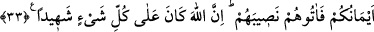

Bir baş çıkar nihâyet bir de bakarsın
Talep kapısını iki elinle vur dâimâ
Güzellik yolunda taleb rehberdir insana.
33- (Erkek ve kadından) her biri için ana, baba ve akrabanın bıraktıklarından
(hisselerini alacak olan) vârisler kıldık. Yeminlerinizin bağladığı kimselere de
paylarını verin. Çünkü Allah her şeyi görmektedir.
“(Erkek ve kadından) her biri için ana, baba ve akrabanın bıraktıklarından” yâni
herbir mal ve terekeye “varisler kıldık.” “Mevâlî” kelimesi “mevlâ” nın çoğulu olup
kendileriyle mîras bırakan arasındaki yakınlığa göre kendilerine terekeden pay ayrılan
mîrasçılar, demektir. Mevâlî farz ve asabe sâhipleri ile diğer mîrasçılardır. Âyetin
mânâsının; “Mevâlî”, yâni mîrasçı kıldığımız her kavim için ana baba ve akrabalarının
bıraktıklarından başka (şerîatlardaki) kavimlerin payından farklı belirli bir pay kıldık.”
şeklinde olması da câizdir.
“Yeminlerinizin bağladığı kimselere de hisselerini” mîrastan kendilerine düşen
paylarını “verin.” Yeminlerin bağladığı kimseler şu kişilerdir ki; böyle anlaşma
yapanlardan biri öldüğü zaman diğeri onun malının altıda birine mîrasçı olurdu. Bu
muâmele “Rahim akrabâları birbirlerine daha yakındır.” (el-Ahzâb, 33/6) âyetiyle
nesh edildi.
Ebû Hanîfe (rh.a.)’ye göre bir kimse, bir adam vâsıtasıyla müslüman olur da ona
mîrasçı olacağı diyete mahkûm olursa diyetini ödeyeceği konusunda sözleşirse bu sahîh
olur. Diyetini ödemesi gerekir. Hiç vârisi yoksa mîrâsını alır. Ancak zevi’l-erhâm, yâni
akrabaları varsa onlardan sonradır.
Âyette akdin yeminlere isnâd edilmesi, akid esnâsında hep onlara dayanıldığı içindir:
“Yeminlerinizin ahidlerini bağladığı kimseler” demektir.
“Çünkü, Allah” aralarında başkasının hissesini vermek ve vermemek fiillerinin de
bulunduğu “herşeyi görmektedir.” Bu ifâdede herkese payını vermeye teşvîk,
vermemeye de tehdit vardır.
Bâzıları “Yeminlerinizin bağladığı kimseler”den maksadın dostluk akdi yapılanlar
olduğunu, “verin” emrinden maksadın ise onlara yardım ve nasîhat etmek, samîmî bir
arkadaşlık ve içten bir berâberlik olduğunu söylemektedir.
Şu halde herkesin mü’min kardeşine yardımcı olması, iki yüzlü ve düşmanca değil
hâlisane bir şekilde iyiliklerini isteyerek dostluk etmeleri gerekir. Hz. Peygamber
(s.a.v) şöyle buyurmuştur: “Mü’minler birbirlerini sevmekte, birbirlerine acımakta ve